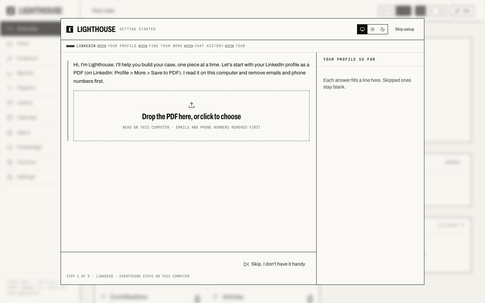

O-1A · EB-1A · Local-first · Open source
Your evidence file, built on your own computer.
Lighthouse turns your work (papers, code, talks, press, judging) into a living evidence file for an O-1A or EB-1A extraordinary-ability case: a criteria scoreboard, an evidence inbox, metrics, deadlines, letters and a dashboard. Start from your LinkedIn PDF; it takes a few minutes.
macOS / Linux: paste into Terminal
curl -LsSf https://raw.githubusercontent.com/ris3abh/Lighthouse/main/install.sh | sh
Windows: paste into PowerShell
powershell -ExecutionPolicy ByPass -c "irm https://raw.githubusercontent.com/ris3abh/Lighthouse/main/install.ps1 | iex"
It installs uv if you don't have it, installs Lighthouse, and
opens it in your browser. Nothing else on your machine changes. The scripts are short; read
install.sh or
install.ps1 first.
Afterwards, start it again with lighthouse-gc.

What you need
A PDF, and that's it
- Your LinkedIn profile as a PDF (on LinkedIn: Profile > More > Save to PDF). Lighthouse reads it on your computer and removes emails and phone numbers first. You can also skip it.
- Optionally, an AI connection: the Claude Code login already on your computer, or an Anthropic API key. Only chat and agent runs need it; everything else works without a model.
- macOS, Linux or Windows, and an internet connection to install.
Privacy
It runs on your computer
- The dashboard is served only to your own computer (127.0.0.1). There's no Lighthouse account or server.
- Your case is a private workspace folder (
~/Lighthouse): plain files in their own git repo. It's yours to keep, back up to a private remote, move or delete. - Lighthouse goes online only for what you ask: a lookup you said yes to, a source you import, or the AI you connect.